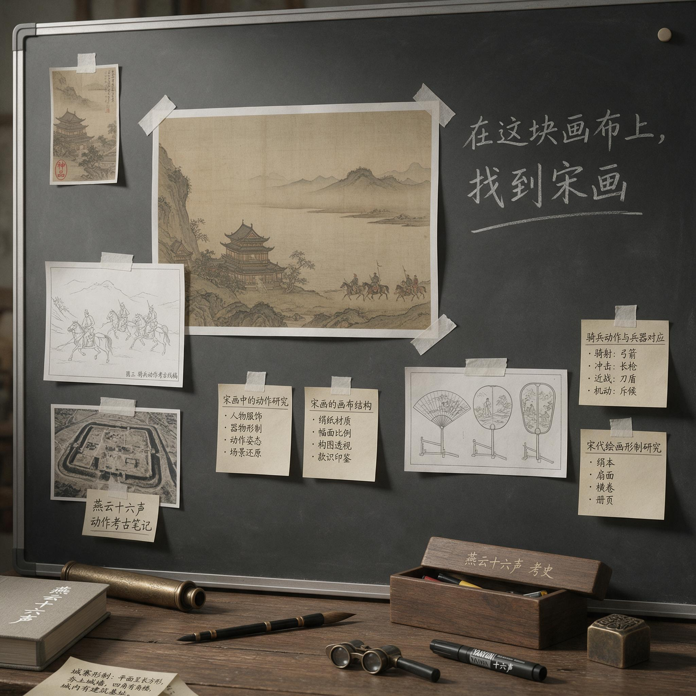

第 10 章
动作的考古学
邮件在2021年3月17日下午三点零七分发出。发件人是技术美术林铮，收件人一栏列着战斗策划组全员、主程序赵毅、制作人沈明远，抄送了美术总监陆瑶。邮件标题写得很直接：笔触滤镜在战斗特效叠加场景下的性能预算——动作组须提前介入。附件是一个Excel表格，拉出了二十七种特效组合在宋画滤镜全开状态下的帧率表现。
林铮的正文只有四行。第三行被标成了蓝色：目前粒子密度超过每帧一千二百时，滤镜后处理延迟从六毫秒跳升到十九毫秒。第四行是结论——建议动作组在特效设计阶段就压住粒子数，不要等到后期削。
沈明远在五分钟之后转发了这封邮件。他在转发里加了一句话，抄送列表里多出了历史顾问顾知远：动作系统是燕云的骨架。
骨架长在宋画的皮下面。两边必须坐在一起弄，不能再各干各的。这句话的措辞——“骨架”与“皮”——在接下来的几个月里会被反复提起。
但三月十七日那个下午，读到这封转发的十四个人中，没有一个人意识到，林铮那份Excel表里那十九毫秒的延迟，只是战斗系统将要面临的一系列结构性冲突中最轻微的一个预震。真正的地震还在震源深处积蓄。它的震源不在渲染管线，不在粒子系统，不在后处理着色器。
它的震源在一个更根本的问题上：当一群想做最好的动作游戏的策划，遇上一群坚持“这就是宋朝”的历史顾问，他们要做的那套战斗系统，到底是给谁做的？
战斗系统的设计，会在接下来的半年里成为《燕云十六声》开发史上第一次真正意义上的“玩法危机”。团队试图在历史武术考据与动作游戏手感之间架设桥梁，却在漫长的迭代中反复坠入两者之间的鸿沟。这条鸿沟的深度，超过了项目组之前碰过的所有技术难题的总和。

因为技术问题有解。而这个问题看上去没有。战斗策划组的组长叫赵铮。三十一岁，从《逆水寒》的动作组调过来，履历上写着参与过三款上线产品的战斗系统设计。沈明远看中的正是他这种实战背景——一个在MMO动作系统的泥泞里滚过、知道手感和效率如何在项目里互相撕咬的人。
他来Everstone报到的那天，背了一个黑色的双肩包，包里塞着一台PS5和一块他用了五年的自定义格斗摇杆。沈明远在面试他的时候问了他对历史战斗系统的理解是什么。赵铮的回答不假思索：手感第一。历史是参考系，不是牢笼。这个回答让沈明远在面试记录上打了一个勾。
但沈明远没有告诉赵铮的是，同一个位置上，顾知远在评审环节留下的意见是另一套话。顾知远是浙江大历史系的退休教授，专攻宋代军事史，被网易研究院推荐来做项目的历史顾问。他在面试后的邮件里写了这样一段话：动作系统若脱离宋代实际武艺体系，徒有爽快手感和无考据根基，则燕云项目的历史叙事将失去物质载体。这段话沈明远没有转发给赵铮。他把两边的意见都存了下来，存在一个叫“战斗系统-价值对齐”的文件夹里。
文件夹建在2021年3月20日。当时里面只有两封邮件。等到这个文件夹塞进第一百三十七封邮件的时候，时间已经过去了四个月。最初的战斗系统概念设计开始于三月下旬。
赵铮带了三名战斗策划、两名动作设计师和一名特效美术，在Everstone办公室地下二层的动作捕抓棚旁边占了一间会议室。会议室没有窗户，墙上贴满了从《只狼》《对马岛之魂》《仁王2》里截下来的战斗帧分解图。赵铮在第一次组会上用马克笔在玻璃板上画了一条曲线。曲线左边写着“真实”，右边写着“爽”。他在曲线中间偏右的位置点了一个点，说：我们落在这儿。
这个定位本身没有争议。争议从定位落地的那一刻开始。顾知远在三月底正式提交了第一批宋代武艺考据资料。这份资料厚达八十七页，附录包含《武经总要》相关章节的影印件、出土宋代兵器物尺寸表、以及一份从宋代话本和军阵记载中复原的步兵基础训练动作序列。顾知远在资料的扉页上写了一行说明：宋代军阵武艺以器械的沉重感、招式的实用性与阵型的协同性为核心特征。民间技击虽较军阵灵活，但仍以一击制敌为要义。枪法注重刺、扎，而非舞花。刀法重劈砍角度与步法配合，不尚跳跃与旋转。
拳法在当时不被视为主要战斗手段，多为器械训练的基础功。赵铮花了三个晚上读完这份资料。读完以后他在组会上说，按这个来做，他们的战斗系统就成了一部宋代军事训练模拟器。他说这话的时候语气平静，但组里的人都能听出这话后面的那个没问出口的问题：这种东西，谁玩？
第一版可玩原型在四月中旬搭了出来。赵铮决定先做枪棒系统。选择枪棒的理由很实际：宋代步兵的主力长兵器，资料最全，动作序列最清晰。顾知远提供的资料里包含了十三式枪棒基础动作，从“起手式”到“收枪式”，每一个动作都附有出处考据和力分析。动作设计师邱阳把这些动作一帧一帧地拆开，用动作捕抓棚里的武术指导做了数字化重建。董玮——项目组通过网易联系的香港动作指导，曾在多部武侠电影中担任武术设计——在远程视频中看了动作捕抓的效果，给出了技术上肯定：动作本身是准确的。但邱阳在把动作数据导入Messiah引擎的那一刻就知道事情不太对。
引擎里的角色模型执行一套完整的“刺-收-扎-收-格-进步-刺”序列需要四点三秒。而同期市场上的主流动作游戏，一套基础连击的完整执行周期通常控制在一秒八到两秒二之间。差了近一倍。
四月十九日，第一次内部测试。测试地点在Everstone的公共测试间。沈明远、赵铮、陆瑶、林铮、顾知远，加上从《逆水寒》项目组借来的三名资动作游戏测试员，一共九个人。
测试版本只有一个可操作角色模型、一套枪棒动作模组、三个基础敌人模型，场景是蔚州城外的一段空白地形。没有UI，没有音效，没有特效。只有动作本身。
三名测试员分别坐在测试间里玩了二十分钟。他们出来以后填了反馈表。反馈表是赵铮自己设计的，分为“手感”“节奏”“视觉表现”“操作直觉”四个维度，每个维度1到10分。
三份反馈表收上来，赵铮看了一眼总分，脸色就沉了下去。“手感”维度的平均分是3.2。“节奏”的平均分是2.7。
测试员A在备注栏里写了一行字：感觉不是自己在控制角色，是角色在带着自己做完一套广播体操。测试员B的评语更简单：刺出去那一下之后，自己等了仿佛一个世纪才收到下一招的反馈。测试员C画了一个表情符号，然后写：这套动作如果自己的奶奶来按，她可能比自己按得好——因为不需要反应速度。
顾知远没有填表。他坐在测试间里看完了全程测试，出来以后对赵铮说：动作是对的。赵铮看着他，等后半句。顾知远没有说后半句。
那天晚上赵铮没回家。他把测试录像在引擎里逐帧回放了四遍，在每一个动作转换节点上标注了帧数。凌晨两点的时候他在工作群里发了一条消息：问题出在动作序列的前摇和后摇。真实武术的发力需要蓄势过程。游戏不需要。或者说，游戏不能忍受。
邱阳在凌晨两点十二分回了一条：能不能削前摇？赵铮回：削了前摇，顾老师那边怎么交代？群消息沉默到凌晨三点。最后赵铮发了第三条消息：明天开始做B版。方向选定，代价也随之而来。
赵铮在第二次组会上直说，既然真实路线走不通，那就先抛掉考据包袱，做一套玩家能爽的。
他重新画了一条曲线。这次他落笔的位置直接划到了曲线最右端。陆瑶在旁边看到了这条曲线，皱了皱眉，但没说话。她的美术风格刚刚在第三章的盲测中确立了“宋画笔触”的基调，从她的角度来看，任何方向上的“最右端”都意味着视觉上的高饱和度、高粒子密度、高速帧切换——这些和宋画的意境感是根本上冲突的。但她当时没有开口。
后来她会为这个沉默后悔。B版的开发周期是三周。赵铮把团队拉到最高强度，取消了所有的考据验证环节。
动作设计师从《鬼泣5》和《崩坏3》的战斗模组里拆出了高速连击的节奏蓝本，在这个蓝本上重新设计了一套枪棒连击系统。特效美术把粒子发射器开到最大，每一击都带出了光弧和碎甲效果。连击数上限从A版的三段拉到了十二段。空中连击、闪避取消、大招特写——所有市场上验证过的“爽点”全部塞了进去。五月十日，第二次内部测试。地点还是公共测试间。
这次的测试阵容扩大到了十七人，项目组把杭州本地的一个玩家社群请了七个人来做外部盲测。
B版测试版本搭好了完整的UI、音效和基础特效。角色在屏幕上动起来的那一刻，测试间里的几个玩家社群代表露出了赵铮期待的那种表情——那种“哦有点东西”的眉毛上扬。测试持续了四十分钟。
七名外部玩家的反馈表在“手感”和“操作直觉”两个维度上的平均分都过了8。测试员A——第一次测A版说过“广播体操”的那位——这次在备注栏写了一行字：爽了。手感到位了。赵铮读到这条的时候嘴角动了动。
然后顾知远站了起来。顾知远在整个测试过程中一直坐在测试间最后一排的角里。他面前摆着一台笔记本，屏幕上开着《武经总要》的PDF和他自己整理的考据笔记。测试结束以后他没有填反馈表。他站起来走到赵铮面前，手里拿着笔记本，翻到了某一页。他说话的声音不大，但测试间里所有人都听见了。这不是燕云。这是仙侠。赵铮的笑僵在嘴角边上。他说：顾老师，玩家反馈——
顾知远的语气不像生气。更像一个看见了自己辛苦整理的东西被碾碎的老头，在陈述一个事实。他说，宋代士兵的枪棒，不会发光。宋代战场上，没有人能在空中转三圈。这套东西放在《燕云》里，玩家看到的将不是历史中的燕云十六州。他们将看到一个穿着宋人衣服的超级英雄，在一个叫燕云的主题乐里放烟花。如果这就是Everstone要做的，那他的工作没有任何意义。他的八十七页资料，他们一页都没真的用上。
他说完把笔记本合上，转身走出了测试间。门在他身后关上，声音不大。但测试间里的空气被那一声关门的轻响抽走了至少一半。
沈明远在这整个过程中没说话。他坐在第一排，面前摊着两份反馈数据的统计表。左边是A版的。右边是B版的。A版的玩家评分烂到了根里，但顾知远点了头。B版的玩家评分逼近了市场基准线，但历史顾问当众退了场。两列数字并排躺在纸上，中间隔着一道沈明远没法用任何一行代码填平的沟。当天的测试总结会开到了晚上十点半。
赵铮在会上做了一个小时的复盘，用数据论证了B版在操作深度和视觉反馈上的进步。陆瑶在会上做了二十分钟的发言，指出B版的特效饱和度和粒子密度在宋画滤镜下会导致帧率暴降——林铮那份三月邮件的预言在五月变成了现实。
顾知远不在会场。他的座位空着，笔记本静静地躺在那张椅子上，没有人去动它。
沈明远在会议最后讲了话。他的原话很短，被记录在项目管理系统当日的会议纪要里：战斗系统的问题不是A版或B版的选择问题。问题是，他们还没找到第三条路。这条路不在真实和爽的任何一端。这条路必须长在中间。在哪里，他不知道。但他说，他知道如果这条路不存在，这个项目就走不到上线那天。
散会以后赵铮在空荡荡的会议室里坐了四十分钟。邱阳在门口站了一会儿，没进去。他看见赵铮用马克笔在玻璃板上画了第三遍那条曲线。这次赵铮没有在曲线上点任何位置。他画完曲线以后，在曲线的下方画了一条平行的线。然后他在两条线的中间空白处开始写字。他写了又擦，擦了又写。邱阳看不清他写了什么。但那个在中间地带反复涂抹的姿态本身，就是一条没有出口的路。
凌晨一点，赵铮给全组发了一封邮件。收件人是战斗策划组全员、顾知远、沈明远。邮件正文说，能不能定义一种不属于任何一端的战斗节奏？这个节奏必须同时满足两个条件——让玩家感觉到操作深度，让历史顾问看到考据痕迹。
顾知远在第二天早上九点回了邮件。他回了四个字：愿闻其详。“势”这个概念第一次出现在项目文档里，是五月下旬。提出这个概念的并非赵铮本人，而是战斗策划组的系统策划许程。
许程二十六岁，是组里最年轻的策划，从上海交大计算机系毕业，进网易刚满一年。他在五月二十日的晨会上，用投影投了一份七页的PPT。PPT的名字叫“一种可能的第三条路”。
许程的论证方式很怪。他没有从游戏设计理论出发。他从一个动作游戏玩家的肌肉记忆曲线讲起。他说，所有动作游戏的本质，是在玩家的按键输入和屏幕上的角色反馈之间建立一种可预期的节奏关系。这种节奏关系有两种极端形态。一种是节奏极度缓慢但真实——A版的问题。一种是节奏极度快速但不真实——B版的问题。但有没有一种节奏，它不是“快”或“慢”，而是“不对等”的？
许程在PPT的第四页提出了这个词：不对等节奏。核心思想是，玩家在一套连击过程中的按键频率不是均匀分布的。它存在密集输入期和停顿蓄能期的交替。停顿期的存在，允许角色在视觉上表现出符合真实武术蓄势过程的动作幅度和时间长度。而密集输入期的存在，允许玩家在技能释放节点体验到接近主流动作游戏的操作快感。
许程给这套系统取了一个中文名字，叫“势”。他在PPT的第六页写了设计定义：通过特定节奏按键积累势，在势能满格后释放强力终结技。积累期的动作风格偏向考据还原，释放期的动作风格偏向现代动作游戏。两者之间通过势能条做视觉和操作上的衔接。
会议室里安静了大概十秒钟。赵铮盯着幕布上的PPT，眼睛没眨。邱阳在旁边用手在桌面上模拟着按键节奏，嘴里念着什么。
陆瑶是第一个开口的。她的问题很具体：视觉上怎么区分蓄势期和技能释放期？蓄势期的画面如果太平，玩家等不住。释放期如果太炸，宋画滤镜顶不住。
许程说，蓄势期的动作幅度可以小。但需要有明确的视觉反馈——不靠光效，靠角色姿态的变化。释放期的特效不做粒子爆炸，做墨迹。陆瑶的眉尖动了一下。墨迹？许程显然做好了功课。他切到PPT最后一页，上面放了一张从陆瑶团队美术白皮书里摘出来的笔触样本图。他说，释放终结技的时候，用动态墨痕代替传统特效光弧。黑色浓淡变化的墨迹在绢本色背景上炸开。这种视觉效果既符合宋画风格，又能给玩家释放终结技的视觉奖励。
但有没有一种节奏，它不是“快”或“慢”，而是“不对等”的？许程在PPT的第四页提出了这个词：不对等节奏。核心思想是，玩家在一套连击过程中的按键频率不是均匀分布的。它存在密集输入期和停顿蓄能期的交替。停顿期的存在，允许角色在视觉上表现出符合真实武术蓄势过程的动作幅度和时间长度。而密集输入期的存在，允许玩家在技能释放节点体验到接近主流动作游戏的操作快感。
许程给这套系统取了一个中文名字，叫“势”。他在PPT的第六页写了设计定义：通过特定节奏按键积累势，在势能满格后释放强力终结技。积累期的动作风格偏向考据还原，释放期的动作风格偏向现代动作游戏。两者之间通过势能条做视觉和操作上的衔接。
会议室里安静了大概十秒钟。赵铮盯着幕布上的PPT，眼睛没眨。邱阳在旁边用手在桌面上模拟着按键节奏，嘴里念着什么。陆瑶是第一个开口的。
她的问题很具体：视觉上怎么区分蓄势期和技能释放期？蓄势期的画面如果太平，玩家等不住。释放期如果太炸，宋画滤镜顶不住。一个具体的视觉问题，把抽象的节奏概念拉回了产品地面上。
许程说，蓄势期的动作幅度可以小。但需要有明确的视觉反馈——不靠光效，靠角色姿态的变化。释放期的特效不做粒子爆炸，做墨迹。
陆瑶的眉尖动了一下。墨迹？许程显然做好了功课。他切到PPT最后一页，上面放了一张从陆瑶团队美术白皮书里摘出来的笔触样本图。他说，释放终结技的时候，用动态墨痕代替传统特效光弧。黑色浓淡变化的墨迹在绢本色背景上炸开。这种视觉效果既符合宋画风格，又能给玩家释放终结技的视觉奖励。
顾知远在会议的后半段才开口。他提了一个问题：蓄势期的动作序列，能不能确保每一下都有对应的宋代武术依据？赵铮在许程回答之前接了话。他说，如果能找到依据，他们就用。找不到依据的，他们先把动作做进去，标黄，请顾老师帮着补依据。顾知远沉默了几秒。然后他说：可以。
这个“可以”，是顾知远自四月参与项目以来，第一次对战斗系统方案使用肯定性的字眼。但他说这两个字的时候眉头是拧着的。那是一种接受而非认可的姿态。是一种妥协而非认同的姿势。
势系统的第一个可玩原型搭了整整六周。六周的每一天都在“找到依据”和“标黄补依据”的拉据中度过。顾知远每天早上准时出现在Everstone的办公室，坐在赵铮旁边的工位上，面前摊着资料。赵铮和邱阳每设计一套蓄势期的动作序列，顾知远就逐帧对照他的考据笔记。对得上的，通过。对不上的，标黄。
六周下来，蓄势期的动作序列积到了三十七套，其中十九套完全通过了顾知远的考据核查，十一套标了黄等待补依据，剩下七套在争论中被删除或合并。标黄的十一套动作成了双方拉据的焦点。赵铮要保留它们，因为从纯手感和操作深度的角度看，这十一套序列在蓄势期提供的节奏变化是不可替的。顾知远要删掉它们，因为现有文献里找不出对应的宋代武艺依据。双方在第六周做过一次超过三个小时的争吵。争吵的录音后来被许程整理成了《势系统-考据争议记录》，存在那个“战斗系统-价值对齐”的文件夹里，成为了文件夹里的第一百三十七份文件。七月十一日，第三次内部测试。测试地点仍然是公共测试间。
这次的测试阵容回到了第一次的规模：九个人。三名内部测试员、沈明远、赵铮、陆瑶、林铮、顾知远，加上一个许程。测试版本是一个完整的功能原型：一个角色、一套枪棒势系统动作模组、四个不同兵种的基础敌人、完整的势能条UI、以及陆瑶团队为这个版本专门做的一套基础墨迹特效。
赵铮在测试前对许程说，这次如果还不行，他可能真的不知道第三条路在哪了。他说这话的时候语气倒不沉重。更像是把所有的期待都放到了最低，然后把剩下的全交给屏幕。
第一名测试员坐下来。开始操作。屏幕上的角色动了起来。蓄势期的动作——沉肩、移步、枪尖微微下压——节奏不快。比A版快，但远低于B版的速度。势能条在屏幕左上角缓缓填充，从空到满需要大约四到五下完整的蓄势动作。测试员的按键频率明显慢了下来，但没有表现出第一次测试时那种焦躁。他的手指在键盘上的移动幅度变小了，节奏稳定。
第六下——势能条满格。终结技触发。角色身体重心骤降，枪身横扫一百八十度，屏幕上没有光弧。
取而代之的是一道浓黑的墨迹，从枪尖划出的轨迹上炸开，沿着绢本色的背景蔓延出一个不规则的笔触形状。墨色浓淡不一，在画面边缘渐渐消散。整个过程不到一秒。测试员的手停了一下。他的眼睛盯着屏幕上那道正在消散的墨迹，嘴角动了动。但没有说话。
第二个测试员。第三个。第四个。九个人全部测完花了将近四个小时。每个人测了不止一遍。有三个人反复测了三遍以上。
反馈表收上来的时候，赵铮没有立刻去看分数。他先看的是测试员的备注栏。测试员A的备注栏只有三个字：有点意思。测试员B写了两行：蓄势的时候他有点焦急，但终结技炸出来的那一刻，那个墨迹让他觉得等待值了。测试员C写了更详细的一段：节奏需要适应。刚开始会不自觉地按照B版的速度去按，会断连。但适应了十几分钟以后，手指找到了那个不对等的节奏，感觉不是在按连招，是在写毛笔字。
赵铮把三份表摊开，然后才开始看分数。“手感”维度平均分6.8。“节奏”平均分6.2。比B版低了，比A版高了不少。
但赵铮的注意力不在这些数字上。他的注意力在测试员B写的那句话的最后四个字上。等待值了。
顾知远这次也没有立刻说话。他把第三次测试版本从头到尾看了三遍。不是操作——他不碰键鼠。他是站在测试员身后看着屏幕上的角色把蓄势和终结技连起来释放了三遍。他的眼睛跟着屏幕上角色姿态的每一次变化移动。看到第三遍的时候，他转过来。
沈明远站在旁边。顾知远对他说了一句话。蓄势期的肩位还有两处不对。但大势上，这条路可以走。
大势。这个词从一个研究宋代军事史的教授嘴里说出来，落在了一群做动作游戏的策划耳朵里。没有人刻意注意这个用词。但它落在七月的那个下午的空气里，像一小块不起眼的墨迹，会渗进接下来所有设计文档的字里行间。
当天晚上的复盘会没有吵。这是战斗系统启动以来，第一次开了一场完全不吵架的复盘会。赵铮把分数和反馈念了一遍。陆瑶报告了墨迹特效在宋画滤镜下的性能表现——比B版的特效粒子方案节省了约百分之六十的渲染开销。
林铮在角里记下这个数字，会在下个周一更新他那份三月份的Excel表。沈明远在复盘会的最后讲了话。他说，这次测试证明了一件事：第三条路是存在的。但它还只是一条只够两个人并排走的小径，不是高速路。蓄势期的节奏需要调优，墨迹特效需要和更多兵种、更多场景做联调，三十七套动作序列里的十一套标黄项要逐条定生死。这些是接下来两个月的工作量。
他说完以后把投影关掉，会议室的灯亮起来。所有人互相看了看，没有人反对。
复盘会散场的时候将近十一点。赵铮开始收桌上的反馈表和测试数据打印件。许程在旁边帮他收。两人都没说话。材料的纸张在安静的会议室里发出轻微的翻动声。
顾知远没走。他坐在会议桌的另一头，面前的笔记本开着，屏幕上停着一份打开到一半的考据资料。他的手指悬在键盘上方，停了很久。然后他开始打字。赵铮的余光里看到顾知远的屏幕亮起来，上面是一行一行的表格。他在填充那十一套标黄动作序列的考据空白——不是删，是填。赵铮没有说话。
他收好材料，走到门口，回头看了一眼。顾知远还在打字。屏幕的光映在他的眼镜镜片上，看不清他的表情。邱阳跟在赵铮后面，拍了拍赵铮的肩膀，两人一前以后出了会议室。
走廊的灯已经暗了大半。测试间里的电脑还在运行着势系统的那一版原型。屏幕上的角色站在原地，枪尖垂地，墨迹已经全部散尽。光线从走廊斜斜地照进来，落在空无一人的测试椅上，安安静静的。
这套初步成型的、讲究节奏不对等的战斗系统，在这个深夜的测试间里，和它自己引起过的所有争吵、所有妥协、所有凌晨的加班和所有擦掉又重画的曲线挤在一起，完成了它作为原型的第一个夜晚。而在隔壁的会议室里，顾知远还在一个字一个字地补着那些他曾经坚持要删掉的动作的宋代武艺考据。他补得很慢。每填一行，就要切到PDF里翻几页《武经总要》的影印件。这场从A版打到B版、从广播体操打到仙侠、最后在不对等节奏里勉强找到着陆点的战斗系统拉据，到这里没有宣告结束。
它在顾知远的键盘声里，在赵铮还没画完的那条第三条路上，进入了一个新的、同样没有答案的阶段。那台还亮着屏的电脑，将在十二个小时后迎来下周一的第一个测试员。而许程PPT里那个被定义为“不对等节奏”的势系统，将在接下来的版本迭代中，渐渐长成《燕云十六声》战斗系统的核心骨架。但七月十一日这个深夜，这些还都只在路上。屏幕上那个角色脚下的绢本色地面在测试间的暗光里泛着淡淡的暖黄，墨迹最后的残痕已经渗进了像素深处，看不见了。这场拉锯没有胜利者，只有被磨损又重新校准的平衡。